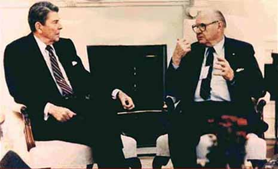

| The Tom Bearden Website |
| Subject: Passing of Roy Brewer
Date: Fri, 6 Oct 2006 Tony et al., I received some very sad news today, of the death of an old friend and a noble American. From his daughter Ramona, I received notice that Roy Brewer passed away on September 16, 2006 at the age of 97. This is the Roy Brewer shown on my website, briefing his close personal
friend President Ronald Reagan for me on the Soviet energetics
superweapons developed and arrayed against us.
 As a result of that successful briefing, our country did start some strong defense programs in that area, and these programs have made very substantial progress in defending this nation against those hostile weapons. It could not have been done without Roy’s firm dedication and personal efforts. He was also one of the stalwart old anticommunist fighters for years, when the Communist Party was making great headway in penetrating various parts of American Society, and particularly targeting Hollywood, the actor’s union, etc. For many years as head of that union Roy almost single-handedly kept this penetration to a minimum, and prevented several wholesale takeovers. We have lost a stalwart and noble American, one who has truly made great personal contributions to the safety and security of the United States and thereby to all his fellow Americans. I salute him fervently as a valiant American and a personal friend, and my most heartfelt wishes go with him for his safe passage to a better hereafter. Most sincerely, Tom |